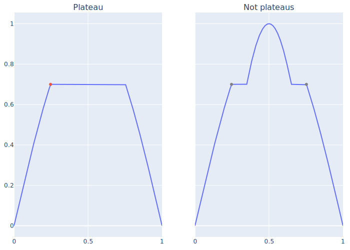

Common terminology
Prefixes and suffixes
"Maxim-", "minim-", "extrem-" prefixes
- "Maxim-" refer to large/larger/etc
- "Minim-" refer to little/small/smaller/etc
- "Extrem-" refer to both large and small
"-a", "-um" suffixes
- The "-a" suffix (e.g. "maxima") means "of a part [of the data]"; there can be multiple maxima in a vector (or a part of a vector)
- The "-um" suffix (e.g. "maximum") means "of the whole [data]"; there can only be one maximum in a vector (or a part of a vector)
Peaks and characteristics
Peak (a.k.a. [local] extrema, maxima, minima, etc.)
Maxima and minima refer to the maximum or minimum (respectively) value within a window, and peak or extrema refers to both maxima and/or minima.
More technically, a peak is an element x[i] which is more extreme (i.e. larger or smaller) than all elements in the window x[i-w:i+w] where w is a positive integer. The simplest and most common case is w=1, which results in an element being more extreme than its neighbors.
In this package/documentation, "peak" is often used when referring to the index (i.e. location) of a peak, which is most broadly relevant when speaking of a specific peak
In the animation below, the maximum in the window x[i-w:i+w] (grey band) is shown as the purple dot. When the maximum lines up with the current "time" (i.e. index, vertical black line), a peak is identified (red dot). Use the scroll bar at the bottom to understand why some "peaks" aren't found. (Hint: pay attention the window size and the window maximum.)
Plateau
A "flat" peak, where the value of the extrema occurs multiple times consecutively, but surrounding elements are less than the extremum. The first occurence of the extrema is considered the peak location. Uncommon for floating-point data.
Peak height
Peak height is the value of the signal for a specific peak. Mouse over (or touch) each peak to see its height.
Peak prominence
For maxima, peak prominence is the (absolute) difference between the height of a maxima and the larger of the two minimums in the adjacent reference ranges. Reference ranges cover the data between the current maxima and adjacent (i.e. previous and next) reference maxima, which must be at least as large as the current maxima, or the beginning/end of the array. The same is true of minima with opposite extrema/extremum (e.g. minima for maxima, and maximum for minimum, etc.).
Peak width
Peak width is measured as the distance (in units of indices) between the intersection of a horizontal reference line with the signal on either side of a peak, where the height of the reference line is offset from the peak height by a proportion of the peak prominence (keyword argument relheight for the peakwidths functions).
"Strict"-ness
The default behavior of peak finding and related functions (e.g. peakproms, etc.) is to only return results that are exactly correct, and to return nothing (i.e. ignore a potential peak), NaN, or missing, as appropriate for a given function. This behavior is controlled by the strict keyword argument (true by default). Setting the strict keyword to false allows these functions to relax some requirements. When strict == false, functions will make optimistic assumptions in an attempt to return useful information (e.g. something not NaN or missing) when data violates default requirements. This can produce results that are not correct according to the strictest definitions of peaks and their characteristics, however, sometimes relaxed behavior is desired/needed.
strict-ness should only affect new peaks/characteristics (i.e. only peaks detected with strict == false). Any observed behavior otherwise (i.e. characteristics of non-strict peaks are altered) is undesired[1] and an issue should be opened.
maxima/minimafinding functions (e.g.findmaxima, etc.) assume that any unobserved (e.g.missingor due to the beginning/end of the array) orNaNdata in a window is consistent with a peak. For example:- The maximal/minimal value in an incomplete window (e.g. an index
iwithinwelements of the array beginning or end,i-w < firstindex(x)ori+w > lastindex(x)) is assumed to be a peak (i.e. if the array continued, the data would be less/more the current maximal/minimal value). This allows the first or last elements of an array to be considered peaks if the data in the window is ascending or descending. - The maximal/minimal value in a window containing
missingorNaNelements is assumed to be a peak (i.e. themissingorNaNvalues would be less/more than the current value if they existed or were real numbers)
- The maximal/minimal value in an incomplete window (e.g. an index
peakpromsuses the larger present (i.e. notNaNormissing) value of the minimum values in each reference range (see prominence definition)peakwidthslinearly interpolates across a gap at the width reference level
- 1We try to ensure that characteristics of non-
strictpeak will be unaffected duringstrict == falsemode. Any issues with examples of altered characteristics are appreciated, and fixes will be attempted, but we do not guarantee that altered peak characteristics can be prevented.